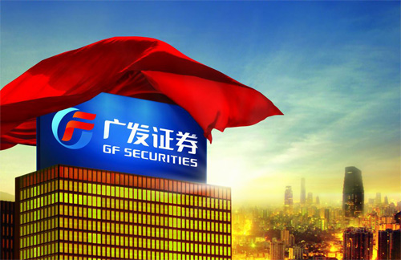

Company Introduction
GF Securities, formerly the Securities Department of Guangdong Development Bank founded on September 8, 1991, was officially established at the end of 1993, and restructured into “GF Securities Limited Company” in 1996. In 2001, “GF Securities Limited Company” as a whole was reorganized into a joint-stock company. GF Securities as one of China's first integrated securities companies, obtained Innovation Pilot qualification in December 2004. On February 12, 2010, GF Securities was successfully listed at the Shenzhen Stock Exchange in a share swap deal with Yan Bian Highway Construction Ltd. GF Securities stock code at the Shenzhen Stock Exchange is 000776.GF Securities was rated a Grade AA securities company in China in 2011.

By the end of December 31, 2011, the Company reported a registered capital of RMB 2.96 billion, consolidated total assets of RMB 76.811 billion out of which RMB 31.635 billion belonged to equity shareholders of the parent company. The company reported in its consolidated income statement for the fiscal year of 2010 total business revenue of RMB 5.946 billion, total profit of RMB 2.504 billion, out of which RMB 2.064 billion was attributable to parent shareholders. The Company has consistently been a leading player in China's securities industry in terms of capital position and earnings capability, making its market capitalization one of the largest among the listed securities firms in China.
The Company (including subsidiaries) has total 199 securities broking branches nationwide, ranking the top 3 in China's securities industry.
The Company controls GF Futures Co., Ltd., GF Holdings (Hong Kong) Co., Ltd., and GF Xinde Investment Management Co., Ltd., and holds a stake in GF Fund Management Co., Ltd., and E Fund Management Co., Ltd., forming a preliminary structure of financial holding group that covers securities, funds, futures and equity investment.
The Company is renowned as the “Ph.D. Legion” in China's capital market, and its people-oriented management philosophy and professional talent team have been functional in sustaining the Company's development.
The Company adheres to the core philosophy of “Seeking knowledge-based growth, being practical-minded, and making contribution” and the operation principle of “Steady and regulated operation.” The Company attaches great importance to improving its internal management system and risk hedging mechanism, and has formed a featured compliance management system, which has helped the Company survive many significant market challenges.
The Company has grown continuously in scale through its own development and a series of market-oriented M&As, with its major operation benchmarks taking the lead in the industry over the years and becoming one of China's most influential securities companies.